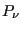
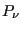

This course is centered upon a mathematical statement called an “ensemble average”:
That is, the expectation value,
 , of some observable property
, of some observable property  is an average over all possible microstates available to a system, indexed by
is an average over all possible microstates available to a system, indexed by  , where  is the probability of observing the system in microstate , and
, where  is the probability of observing the system in microstate , and  is the value of the measured property when the system is in microstate . Before even considering how to use computer simulation to make such a measurement of a particular property for a particular system, there are three main issues to consider:
is the value of the measured property when the system is in microstate . Before even considering how to use computer simulation to make such a measurement of a particular property for a particular system, there are three main issues to consider:
- What is a microstate?
- What is meant by observing the system?
- How do we calculate probabilities?
In the following subsections, we give a cursory treatment of elmentary statistical mechanics aimed at answering these questions. The aim is to give the student an appreciation of the basic physics that underlies a majority of current molecular simulation.
Subsections
cfa22@drexel.edu